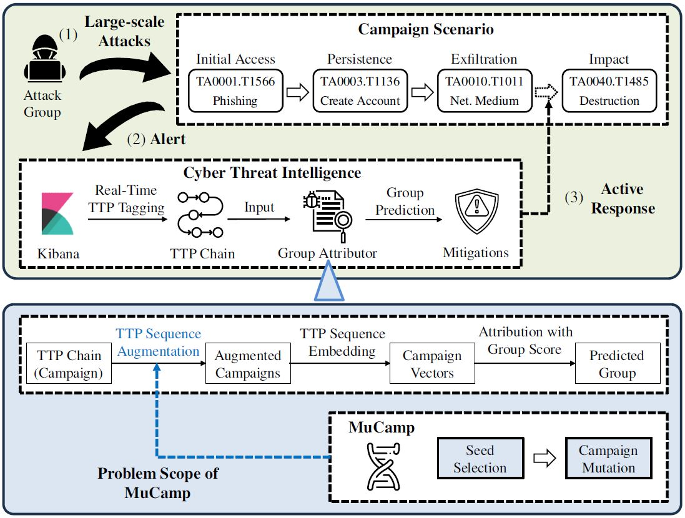
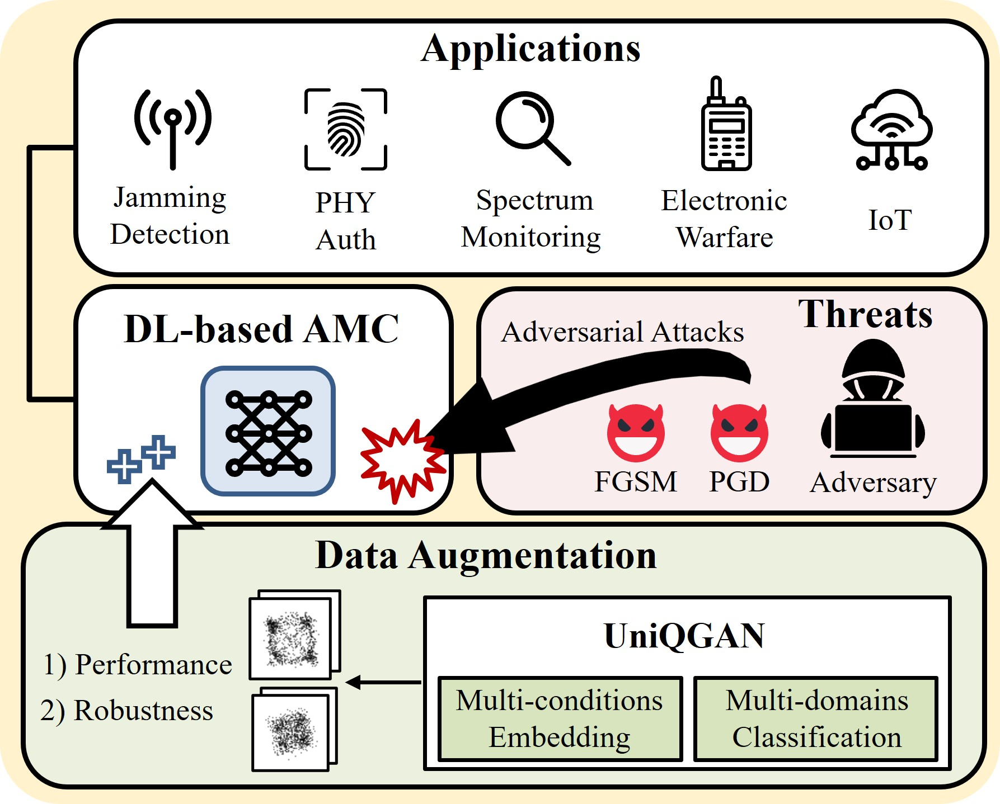
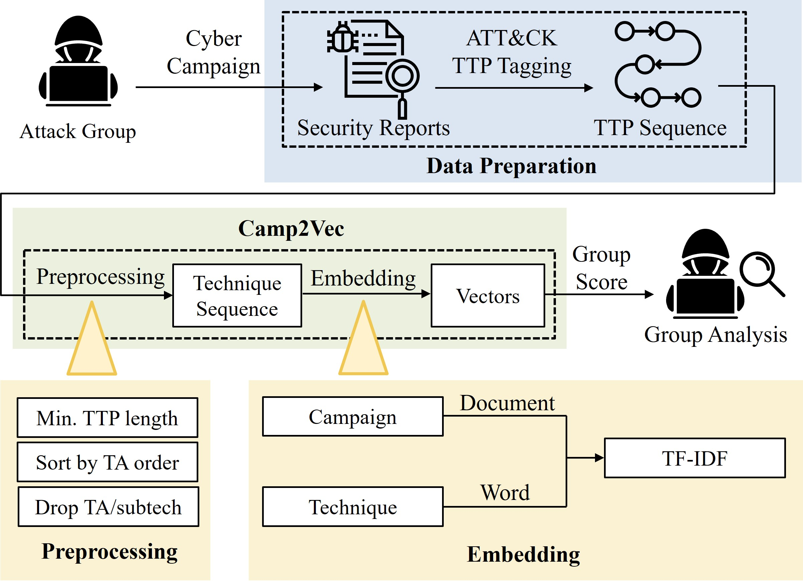
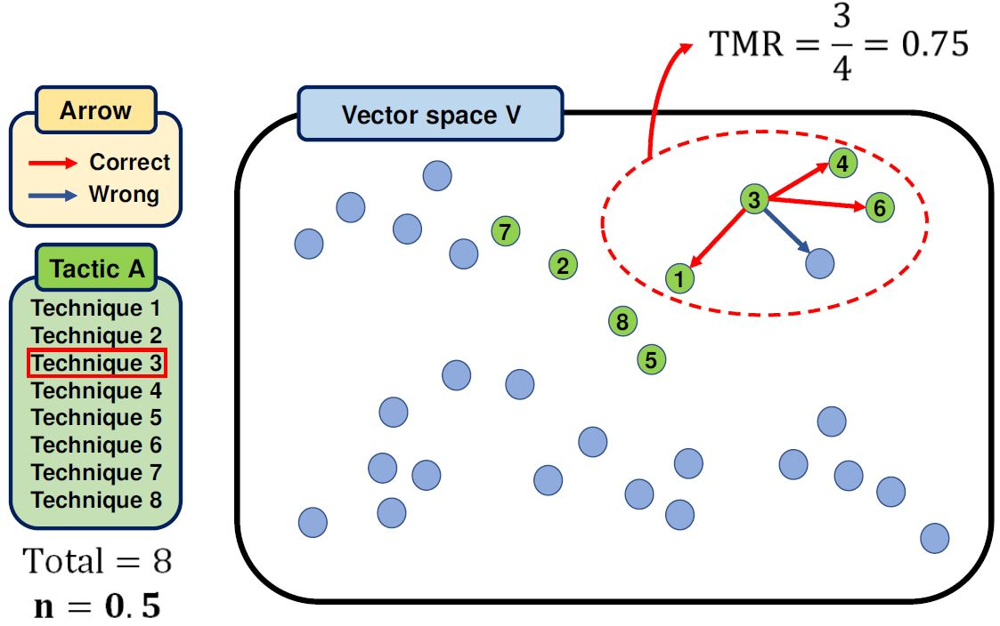
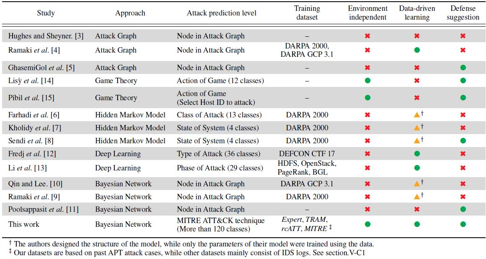
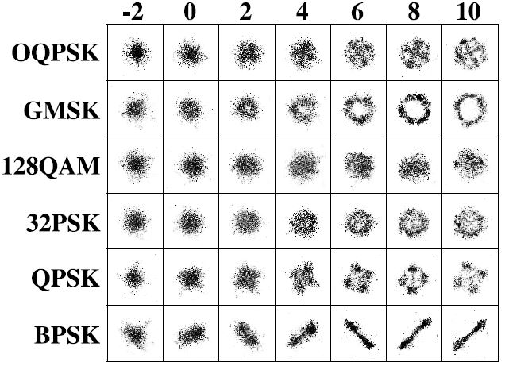
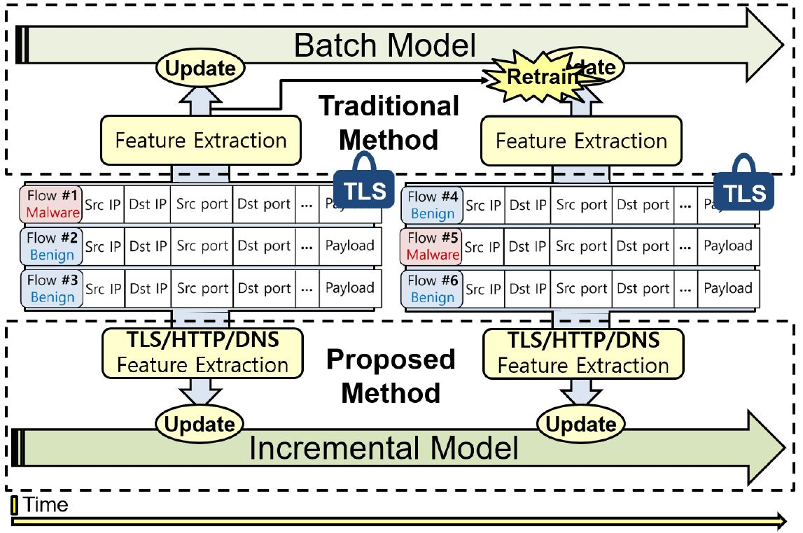
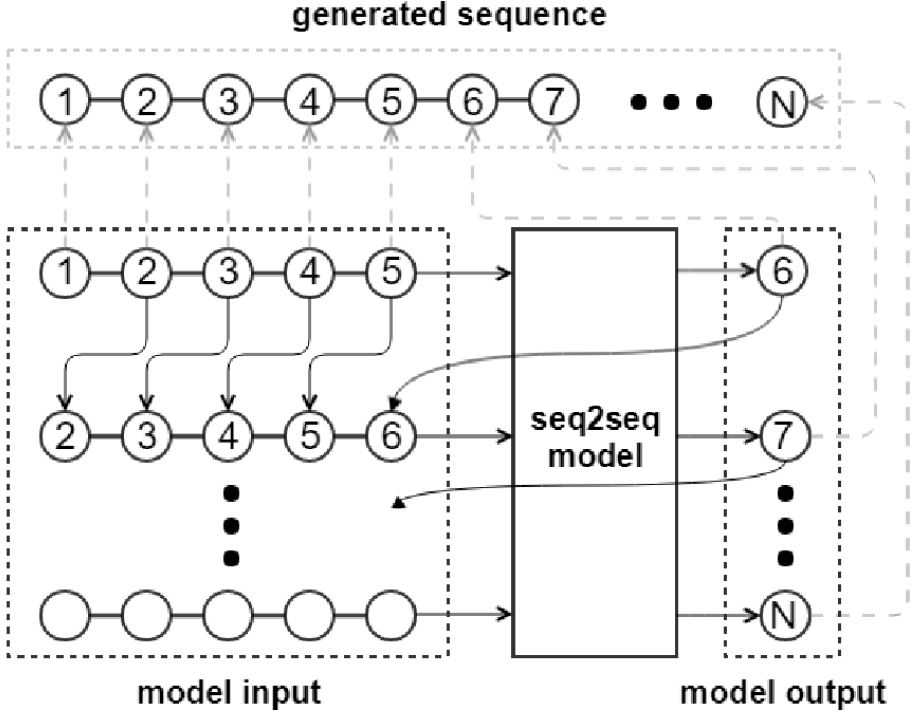
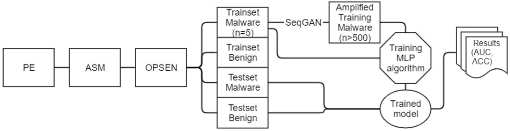

Research Experience
Korea University (Sep. 2019 - Present)
Ph.D. Student, advised by Prof. Wonjun Lee
- Scalable Generative Models for Robust Modulation Classification (May 2020 - Present)
- Keywords: modulation classification, diffusion models, GAN, adversarial robustness, deep learning
- Frameworks/Tools: PyTorch, IBM ART (Adversarial Robustness Toolbox)
- Publications:
[J1],
[J5]
- Network Intrusion Detection Systems Using Incremental Learning (Sep. 2019 - Jul. 2020)
- Keywords: network IDS, machine learning, encrypted traffic classification, incremental learning
- Frameworks/Tools: scikit-learn
- Publications:
[C3]
Agency for Defense Development (Aug. 2018 - Jul. 2023)
Researcher, advised by Dr. Changhee Choi
- Detecting State-Sponsored Cyberattacks via Machine Learning (Apr. 2021 - Jul. 2023)
- Keywords: CTI, data augmentation, embedding, NLP, cyber campaign, SOAR, MITRE ATT&CK, TTPs
- Frameworks/Tools: PyTorch, FastAPI, Git, PostgreSQL
- Publications:
[J2],
[J3],
[J4]
& one journal paper is submitted (under review)
- Generative Models for Cybersecurity Data Augmentation (Jun. 2019 - Oct. 2020)
- Keywords: host IDS, sequence data, CycleGAN, SeqGAN, Seq2Seq, ADFA-LD
- Frameworks/Tools: TensorFlow, Node.js, Git
- Publications:
[C1],
[C2]
- IPADS: Integrated Proactive and Adaptive Defense Systems (Aug. 2018 - May 2019)
- Keywords: anomaly detection, network IDS, in-vehicle network, MilCAN, CIC-IDS2017
- Frameworks/Tools: scikit-learn
|
Publications
(J: journal / C: conference / P: patent)
Under Review
|

|
MuCamp: Generating Cyber Campaign Variants via TTP Synonym Replacement for Group Attribution
Insup Lee and Changhee Choi
Submitted to IEEE Transactions on Information Forensics and Security (TIFS)
|
International Journals and Conferences
|

|
[J5]
UniQGAN: Towards Improved Modulation Classification With Adversarial Robustness Using Scalable Generator Design
Insup Lee and Wonjun Lee
IEEE Transactions on Dependable and Secure Computing (TDSC), 2024
[paper]
(SCI 2023 Top 5.34% in Computer Science, Software Engineering)
|
|

|
[J4]
Camp2Vec: Embedding Cyber Campaign With ATT&CK Framework for Attack Group Analysis
Insup Lee and Changhee Choi
ICT Express, 2023
(SCI 2023 Top 23.29% in Computer Science, Information Systems)
|
|

|
[J3]
Exploiting TTP Co-occurence via GloVe-Based Embedding With ATT&CK Framework
Chanho Shin, Insup Lee, and Changhee Choi
IEEE Access, 2023
(SCI 2023 Top 34.66% in Engineering, Electrical & Electronic)
|
|

|
[J2]
BAN: Predicting APT Attack Based on Bayesian Network With MITRE ATT&CK Framework
Youngjun Kim, Insup Lee, Hyuk Kwon, Gyeongsik Lee, and Jiwon Yoon
IEEE Access, 2023
(SCI 2023 Top 34.66% in Engineering, Electrical & Electronic)
|
|

|
[J1]
UniQGAN: Unified Generative Adversarial Networks for Augmented Modulation Classification
Insup Lee and Wonjun Lee
IEEE Communications Letters, 2022
(SCI 2023 Top 33.61% in Telecommunications)
|
|

|
[C3]
Encrypted Malware Traffic Detection Using Incremental Learning
Insup Lee, Heejun Roh, and Wonjun Lee
IEEE INFOCOM - Poster Session, 2020
|
|

|
[C2]
Anomaly Dataset Augmentation Using Sequence Generative Models
Sunguk Shin, Insup Lee, and Changhee Choi
IEEE International Conference on Machine Learning and Applications (ICMLA), 2019
|
|

|
[C1]
Opcode Sequence Amplifier Using Sequence Generative Adversarial Networks
Changhee Choi, Sunguk Shin, and Insup Lee
International Conference on ICT Convergence (ICTC), 2019
|
US Patents
-
[P1]
Method for Training Attack Prediction Model and Device Therefor
Changhee Choi, Chanho Shin, Sunguk Shin, Seongyeon Seo, and Insup Lee
U.S. Patent Application Number. 18/126,005
Domestic Journals and Conferences
- Insup Lee, Chanho Shin, and Changhee Choi, “Mutating Cyber Camapaign With TTP Word Replacement,” in Proc. of the KIMST Annual Conference, Jun. 2023.
- Chanho Shin, Insup Lee, and Changhee Choi, “Towards GloVe-Based TTP Embedding With ATT&CK Framework,” in Proc. of the KIMST Annual Conference, Jun. 2023.
- Changhee Choi, Insup Lee, Chanho Shin, and Sungho Lee, “Cyber Threat Campaign Analysis Based on PEGASUS and RoBERTa Model,” in Proc. of the KIMST Annual Conference, Jun. 2023.
- Insup Lee, Chanho Shin, Sunguk Shin, Seongyeon Seo, and Changhee Choi, “Analyzing Cyberattack Campaign Similarity via TTP Sequence Embedding,” in Proc. of the KIMST Annual Conference, Jun. 2022.
- Sunguk Shin, Insup Lee, Chanho Shin, Seongyeon Seo, and Changhee Choi, “Cyber Campaign Analysis With TTP Embedding Using TF-IDF,” in Proc. of the KIMST Annual Conference, Jun. 2022.
- Chanho Shin, Sunguk Shin, Insup Lee, Seongyeon Seo, and Changhee Choi, “Classifying TTP Based on CIA Labeling,” in Proc. of the KIMST Annual Conference, Jun. 2022.
- Changhee Choi, Chanho Shin, Sunguk Shin, Seongyeon Seo, and Insup Lee, “Cyber Attack Group Classification Using Siamese LSTM,” in Proc. of the KIMST Annual Conference, Jun. 2022.
- Chanho Shin, Sunguk Shin, Seongyeon Seo, Insup Lee, and Changhee Choi, “Embedding and Training RNN to Estimating the Goal of Cyber Attack,” in Proc. of the KIMST Fall Conference, Nov. 2021.
- Sunguk Shin, Chanho Shin, Seongyeon Seo, Insup Lee, and Changhee Choi, “The Proposed Approach for Country Prediction With TTP-based Cyber Data Using GCN,” in Proc. of the KIMST Fall Conference, Nov. 2021.
- Changhee Choi, Chanho Shin, Sunguk Shin, Seongyeon Seo, and Insup Lee, “Deep Learning for Estimating Next Action of Cyber Attack,” in Proc. of the KIMST Fall Conference, Nov. 2021.
- Yongbin Park, Sunguk Shin, and Insup Lee, “A Study on Evaluation Method of NIDS Datasets in Closed Military Network,” Journal of Internet Computing and Services (JICS), vol. 21, no. 2, pp. 121-130, Apr. 2020.
- Insup Lee, Jingook Kim, and Jeongchan Park, “Analysis of Weight Setting in Incremental Learning to Improve Real-Time Intrusion Detection,” in Proc. of the KIMST Annual Conference, Jun. 2019.
Domestic Patents
- Changhee Choi, Sunguk Shin, and Insup Lee, “Appratus, Method, Computer-readable Storage Medium And Computer Program For Generating Operation Code,” Korea Patent Application Number. 10-2019-0141865, November 07, 2019; Korea Patent Number. 10-2246797, April 30, 2021.
Software Registrations
-
Changhee Choi, Sunguk Shin, and Insup Lee, "Log Extractor For Windows 10 Internet, Event, Process, and Network," Software Registration No. C-2020-035358, October 14, 2020.
|